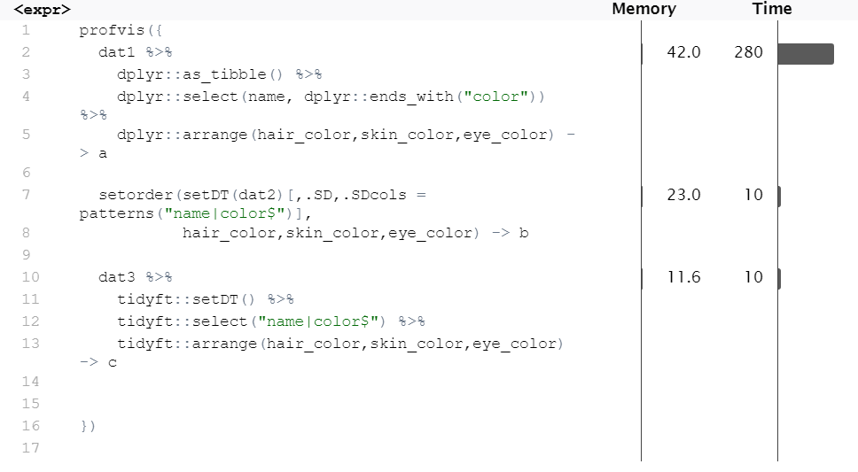

Overview
tidyft is an extension of data.table. Using modification by reference whenever possible, this toolkit is designed for big data analysis in high-performance desktop or laptop computers. The syntax of the package is similar or identical to tidyverse. It is user friendly, memory efficient and time saving. For more information, check its ancestor package tidyfst.
This design is best for big data manipulation on out of memory data using facilities provided by fst. In such ways, you can handle the most quantity of data in the least time and space on your computer.
Example
This is a basic example which shows you how to solve a common problem:
library(tidyft)
# get first 5 rows of iris
as.data.table(iris)[1:5] -> a
#show
a
#> Sepal.Length Sepal.Width Petal.Length Petal.Width Species
#> 1: 5.1 3.5 1.4 0.2 setosa
#> 2: 4.9 3.0 1.4 0.2 setosa
#> 3: 4.7 3.2 1.3 0.2 setosa
#> 4: 4.6 3.1 1.5 0.2 setosa
#> 5: 5.0 3.6 1.4 0.2 setosa
# if you select
a %>% select(1:3)
#> Sepal.Length Sepal.Width Petal.Length
#> 1: 5.1 3.5 1.4
#> 2: 4.9 3.0 1.4
#> 3: 4.7 3.2 1.3
#> 4: 4.6 3.1 1.5
#> 5: 5.0 3.6 1.4
# you lose the unselected columns forever
a
#> Sepal.Length Sepal.Width Petal.Length
#> 1: 5.1 3.5 1.4
#> 2: 4.9 3.0 1.4
#> 3: 4.7 3.2 1.3
#> 4: 4.6 3.1 1.5
#> 5: 5.0 3.6 1.4If you still want to keep the original data, use copy() to make a copy beforehand.
Tutorial
See vignettes.
Performance
rm(list = ls())
library(profvis)
library(dplyr)
library(tidyft)
as.data.frame(starwars) -> starwars
starwars[sample.int(1:nrow(starwars),1e6,replace = T),] -> starwars
copy(starwars) -> dat1
copy(starwars) -> dat2
copy(starwars) -> dat3
profvis({
dat1 %>%
dplyr::as_tibble() %>%
dplyr::select(name, dplyr::ends_with("color")) %>%
dplyr::arrange(hair_color,skin_color,eye_color) -> a
setorder(setDT(dat2)[,.SD,.SDcols = patterns("name|color$")],
hair_color,skin_color,eye_color) -> b
dat3 %>%
tidyft::setDT() %>%
tidyft::select("name|color$") %>%
tidyft::arrange(hair_color,skin_color,eye_color) -> c
})
all.equal(a,b)
#> [1] TRUE
all.equal(b,c)
#> [1] TRUE